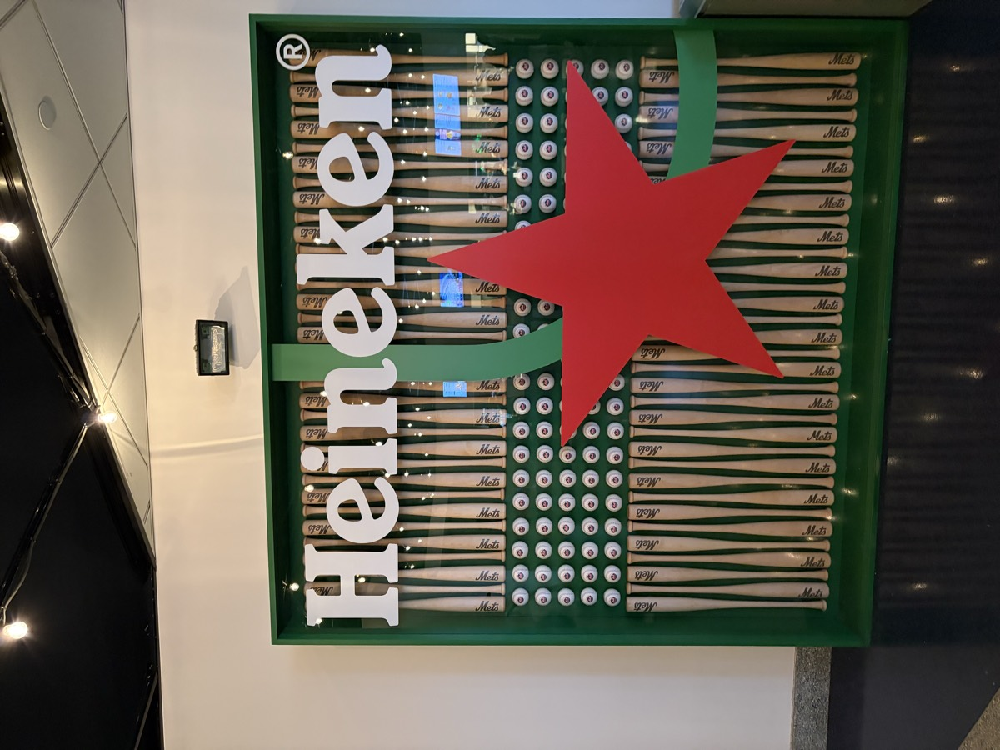
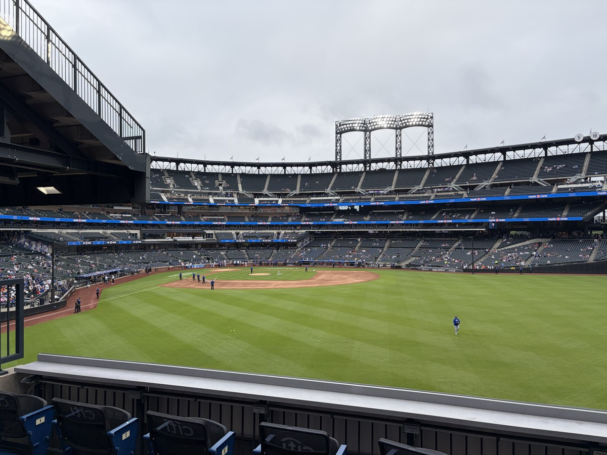
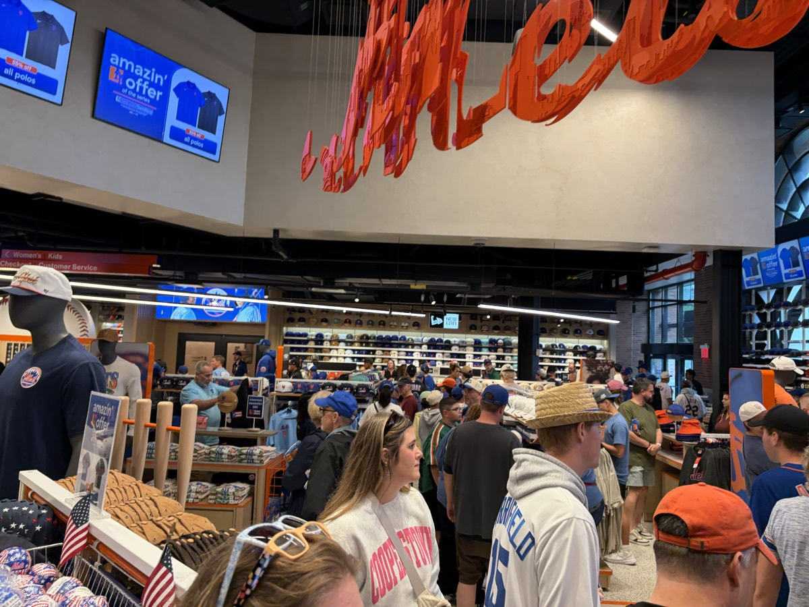
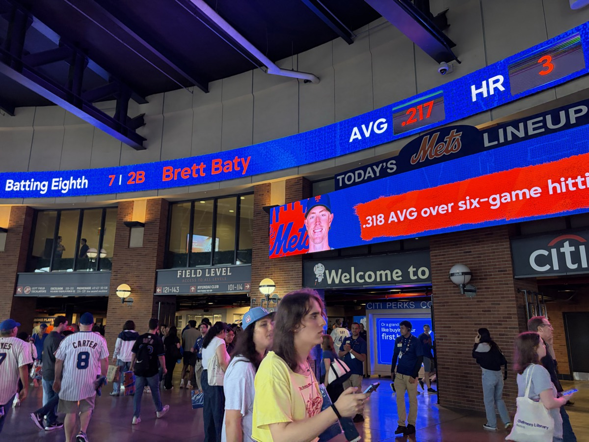

Snapback · scan the whole night in a click
+ Add a tip
 Best Seats100 Level
Best Seats100 Level 300 Level
300 Level 400 Level
400 LevelWhere to sit
3 tips · center 200s over behind-the-basket
1Front rows in the 200s in the center sections beat behind the basket, even down low.41
2The Chase Bridge and the Hyundai Bridge are both cool spots, and the Hyundai Bridge is good value.33
3The Delta Club comes with all-inclusive food and drink (non-alcoholic).19
Center 200sJack's pick for the best value seat
 Best FoodSteak Sandwich · Sec 107
Best FoodSteak Sandwich · Sec 107 Garden Market
Garden Market Burgers
BurgersWhat to eat
3 tips · eat the sandwich, skip the pizza
1Best food in MSG is the steak sandwich outside section 107.57
2The hamburgers from the Garden Market are the best basic food item in sports — a different bun that is fantastic.44
3Carnegie Deli is another good one. Skip the pizza, it is bad in the arena.28
Sec 107The best food in the building
 Getting InOutside
Getting InOutside Gates
Gates Concourse
ConcourseGetting in
1 tip · transit over driving, every time
1Best ways in: walking, the subway, the LIRR, or NJ Transit. Driving would be my last choice.38
Take transitDriving is Jack's last choice
 BeforeChase Lounge
BeforeChase Lounge
Bar Delta Club
Delta ClubBefore the game
2 tips · pregame spots & the reserve lounge
1Pregame spots nearby: Nick and Stef's Steakhouse, The Rutherford, Stout, Mustang Harry's, and American Whiskey.22
2There is a Chase reserve lounge inside the arena. You can reserve a spot pregame.15
Chase LoungeReserve a spot before doors
 AtmosphereTip-off
AtmosphereTip-off Concourse
Concourse
ConcourseThe atmosphere
1 tip · best crowd in the NBA
1Best crowd in the NBA. Be ready to stand, and the seats are tight between people. Not the most family-friendly, but there is still plenty of in-game entertainment like t-shirt tosses.63
Stand upThe energy is worth it
 InsiderTeam Store
InsiderTeam Store
Team Store
ConcourseInsider tips
2 tips · the shortcuts nobody tells you
1The merch store through the gates on the 100 level has a way shorter line than the one in the MSG lobby.31
2Alcoholic drinks are very expensive inside MSG.26
100 gatesShorter merch line than the lobby